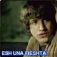

Travian
 De: La Frikipedia, la enciclopedia extremadamente seria.
De: La Frikipedia, la enciclopedia extremadamente seria.
De la serie Videojuegos:
Travian

| Desarrollado por:
|
Travian Games GmbH. Nürnberger Str. 17. 97762 Hammelburg
|
| Distribuido por:
|
Los mismos germanillos de arriba, estos no les deben nada a nadie
|
| Diseñado por:
|
Un alemán, posiblemente de Alemania (Que no el niño ese loco, oiga)
|
| Motor
|
Tres equites y un batidor a gasoil
|
| Género(s)
|
Masculino
|
| Fecha de lanzamiento:
|
En catapulta
|
| Modos de juego:
|
No muy buenos
|
| Requisitos:
|
Ausencia de humanidad. Vampirismo
|
| Disponible en:
|
travian.com
|
| Formatos:
|
En cassete y por vía oral
|
| Edades:
|
Desde la primera papilla hasta la muerte
|
| Puntuaciones:
|
8/10 Escala de Ritcher
|
y decian que los alemanes eran rudos...
Travian es un MMORPG (Masif multiplaller onlain rol plaller geim) en el cual intentas ser el primero, y tienes cuatro tipos de recursos para construir, y hacer tropas.(madera, hierro, barro, tias buenas)
Orígenes
Chuck Norris aplicó sus conocimientos del arte de la guerra adquidos del maestro Sun Tzu en una noche de borrachera, después lo mató de una patada giratoria; no tenía nada más que enseñarle. Años después, otra vez de borrachera (no se sabe si la continuación de la anterior) inventó el Basic junto a unos teutones, y se le ocurrió combinar el gotelé, el Basic y los conocimientos adquiridos para crear un juego. Lo llamó Travian (palabra derivada de la forma simple y arcaica travian, que significa travian).
Objetivos
Aparte de hacer crecer nuestro ego, humillando a los que si tienen vida y gastar tiempo de la vida social fuera del código del juego, hacer crecer nuestra aldea, nuestras casitas y nuestros habitontos, fardar de nuestras tropitas y nuestro top correspondiente, topear alianzas enemigas, que no te pillen la(s) multicuenta(s), entender al juez, y sobrevivir a él.
Razas
- Romanos: son los más fardones, con sus lustrosas y brillantes armaduras, sus armas de exquisita factoría y su bonita arquitectura. Casi todos los "travianeros" (realmente sólo los n00bs) juegan con ellos, porque según las instrucciones del juego son los más fáciles de llevar (aúnque ignoramos si la traducción es correcta, como casi todas las del juego).
- Germanos: son feos y malos, muy malos. Cuando la mayoría de los romanos aún están diseñando el plan de urbanismo de su aldea, estos especímenes echan psicotrópicos en el rancho de sus soldados para que saqueen, maten y violen a sus vecinos (y a veces también a sus vecinas).
- Galos: son los más simpáticotes de todos. A casi todo el mundo le caen bien los galos con sus blancos caballitos y sus graciosos aldeanos. ¿A quién no le gustaba Asterix y Obelix de pequeño?, pues eso.
- ViKiNg_CoLoNy: solo existe una, por tu bien no la intentes igualar.
- Los violadores: Raza ideada por Lord Ariakas, tambien conocido como el violador de vacas aqui una pequeña descripcion:Los violadores son la tropa más avanzada de TraBian. Con un consumo de 1 choco krispi posee una fuerza de ataque incalculable. Armados con un bote de vaselina y su chorizo de cantimpalo, solo pueden ser defendidos por aldeanas que tengan sprays de defensa. Avanzan 50 casillas por hora, ya que su sadismo le hace muy veloz. Condiciones previas: Puticlub nivel 5. Establo de vacas para entrenar: nivel 15
Especimenes tipicos de jugadores de Travian

Unos jugadores típicos de Travian.
Según su actitud en el juego
- Vakita: dícese de aquel individuo jugador de travian, de asiduidad media o alta, en cuya aldea siempre suelen encontrarse exquisitos y suculentos manjares un par de veces al día.
- Vakita llorona: dícese de aquel individuo jugador de travian, de asiduidad baja, media o alta, que no soporta bien las humillaciones y se defiende mediante el insulto, consiguiendo ser ordeñada más concienzudamente.
- Vakita regordeta: dícese de aquel individuo jugador de travian, de asiduidad baja, en cuya aldea siempre suelen encontrarse exquisitos y suculentos manjares a no ser que los consumamos todos.
- Vakita peleona: dícese de aquel individuo jugador de travian, de asiduidad media o alta, en cuya aldea siempre suelen encontrarse exquisitos y suculentos manjares un par de veces al día, y que además intenta resistirse a las visitas culinarias de nuestras pacificadoras huestes mediante la creación de ínfimas cantidades de tropa que alimentan la sed y ansia de sangre de nuestros héroes.
- Vakita amiga: dícese de aquel individuo jugador de travian, de asiduidad media o alta, en cuya aldea ha quedado protegida de nuestros ataques por la habilidad del jugador para divertirnos, seducirnos o entretenernos.
- Vakita "esto no me gusta": dícese de aquel individuo jugador de travian que creó una aldea, estuvo unos pocos días y después la abandonó por no gustarle el juego, ocupando un espacio en el mapa y con no más de 10 habitantes. Da pocos beneficios y si se atraca ya no se puede volver a realizarse, pues su producción es mínima.
- Simcitero/Casitero: dicese de aquel individuo jugador de travian, de alta asiduidad, cuya aldea dispone de unos grandiosos arquitectos y cuyos recursos y preocupaciones se basan en donde ubicar su proxima casita, su Top es el de aldeas.
- Malote/Orko: dicese de aquel individuo jugador de travian, de alta asiduidad y que vive pegado al travian para disponer de sus tropas de forma continua y enviarlas a gloriosas, o no, razzias a multitud de vecinos sin piedad ninguna y sin atender a sus peticiones de clemencia, su rank es el de ofensivas.
- Los Estampa-Cabezones: dicese de aquel tipo de jugador que logra estampar 6 o mas cabezones intentando conquistar una aldea de 300habitantes, encontramos su maximo exponente en Aspirino/Sacarino/Fluorescente
Según sus tropas
- Comprame un pony: dicese de aquel individuo jugador de travian, cuyas tropas estan compuestas en su mayoria por caballeria para poder realizar agresiones con gran celeridad y posiblemente con nocturnidad y alevosia para no ser detectados.
- Tutti Frutti: dicese de aquel individuo jugador de travian, cuyas tropas estan compuestas por una proporción de 3 o 4 soldados de infanteria por cada uno de caballeria, su obsesión es la equidad entre consumo y ataque entre cada tipo de tropas, a veces acompañados por grandes armas de asedio y otras veces no segun sus deseos.
- Pateadores: dicese de aquel individuo jugador de travian, cuyas tropas estan compuestas principalmente por tropas de a pie acompañadas por pesados arietes para destruir las murallas enemigas y catapultas para causar grandes daños a las cuidades, suelen ser enormemente numerosas debido a que se las ve venir de lejos con el polvo que levantan viniendo.
- Capellistas: dicese de aquel individuo jugador de travian, cuyas tropas estan compuestas principalmente por pretorianos de grado 20, esperando un ataque que nunca llegará. Su ranking pretende ser el de defensor, pero no llega ni a eso. También conocido como "jugador de las casitas" se aburre y aburre hasta a un caballo de cartón. Eso sí, permanece invicto.
Según su escuela táctica
- Los del "JEJE": Dícese de aquel individuo jugador de travian, que realiza grandes ataques con extraños metodos de barrido, catapulteado y cabezones (oficialmente conocidos como senadores-caciques-cabecillas) con eroticos resultados de muerte de las catas y senadores y el barrido pasando detrás, son muy divertidos.
- Los Pornostard: Conocidos también como Pro-retretes. Dícese de aquel individuo jugador de travian, que juegan el primer servidor traviano comenzando meses antes que el resto y arrasa a sus enemigos por doquier basandose en eliminar horas de sueño, sienten predilección por la conquista de estraños y antiguos artefactos; para posteriormente borrar sin ganar nada y arrastrarse por los servidores posteriores. Tienen en sus filas a jugadores miticos como Alex Pastel, Tuercas o SinCiencias. Actualmente se ganan la vida haciendo merchandising y politonos sobre Pornostard.
- Los Ositos Bujarras: dícese de aquel individuo jugador de travian, que se dedica a la creación de bosques, repartir amor y a sus casitas durante todo el server, mudándose atpc y haciendose unas pocas grandes ofensivas. No volvió a verseles el pelo, sólo el PKToso y SPAMoso Erfilos junto con sus mariconas reapareció en el nuevo s1 sin pena ni gloria siendo arrasado para variar.
- Los de Hitks2: Dícese de aquel jugador de travian capaz de pasarse todo el servidor haciendo catas, sin jugar a nada más, para luego lanzar el ataque en aleatorio y estampar 16k catas derribando un almacen (pequeño, por supuesto) que no podrá estar más allá de nivel 2.
- Los Siervos de Aktio: Dícese de aquel jugador de travian que adora al Dios creador Aktio (se rumorea que es un pseudónimo de Chuck Norris). Son los creadores de la corriente filosófica que asola los mundos de travian: "el bocachanclismo" cuyo maximo esponente es Zumbiditos. Suelen ser ex miembros del "JEJE" muy malotes y con ganas de matar a Erfilos y sus marikitas.
- Las Lagartijas: Dragones, Tiâmat, EnûmaE... son conocidos por muchos nombres impronunciables. Se rumorea que aparte de malgastar su vida en este juego son también una secta satánica. Están liderados por Gilga Beckenbauer y la Dominatrix de las casitas. Segun algunos expertos el ritual para ponerle nombre a la alianza consiste en reuniones de todos los miembros donde abunda el Vodka y las orgías homosexuales, a continuación "el elegido" se pone tres polvorones en la boca e intenta repetir algun dicho popular. Así nacieron las palabras "EnûmaE" y "Tiâmat".
- C'ANK: Macrocoalición de robots asesinos liderados por carismáticos lideres como Santos, el caballo rojo de santiago o el emperador OrgBOT. Está formada por Komic-os (los amigos de Arkan), cAyO, los langostinos, los FEOrales, la guardia personal de OrgBOT y los desaparecidos SITEDOY que se inmolaron cansados de recibir palos del juez.
- La Horda:Sonrozadoz komeflorez, comeniñoz y malolientes, creados por Leto, Pantani, PervertQueen e Iluvatar, tiempo despues se sumó Ivanka y su chamán Stilgar, se distinguen por su mal olor y lo feos que son.Ademas, fue la primera alianza que empezó con la moda de tener firmas diseñadas (por PerverQueen) que crearon furor en todos los foros de Travian haciendo que lluevan los pedidos de ingreso de jugadores a La Horda. Cuentan entre sus filas con casiteros de excepción como Nagash y Nosequeponer, un spammer oficial como Noctámbulo y las chicas más hermosas de todo el Travian. Inexplicablemente todos estos especímenes sienten predilección por el culito peludo de Athazel, no obstante cuando éste está ocupado siempre recurren a la zoofilia (preferentemente con su mascota, que es un cerdo de color verde), Mr.Lemur también és peludo y muy suave. Por una extraña razón, los concursos de Miss Orkita lo acaban ganando siempre los tios. Se caracterizan por dar palos a todo dios, decir frases sin sentido (Wagh! unga lele!...) y andar por el mundo travianico metiendose en todos los fregaos posibles, que consiste basicamente en destacar poco en poblacion y tocar los cojones a las alianzas casiteras, hasta que se lia y sacan sus megaofensivas a pasear, no les hace falta hacer defensas porque hacen apariciones estelares por el foro general de travian y los espontaneos y sus amigos en la sombra les blindan las aldeas ofensivas, tactica conocida como el "blindaje fantasma orko"
- Los colocaos: Revoltijo de dias y las noches poniendo colas de tropas en sus aldeas e irse de fiesta a ponerse hasta el culo de todo para luego volver y con el colocon hacer ataques tan pirados que hasta alguno salia bien, de las alianzas peor organizadas de la historia, sin foro propio ni cargos, y que tuvieron una maravilla conocida como Etiopia porque cada noche se quedaba vacia porque todo se moria de hambre... a pesar de todo fueron parte del bloque ganador del segundo speed, porque otra cosa no hacian, pero sus macro ofensivas finales fueron bastante apañadas, como la de Cerderus (explotador de repres y frase para la posteridad "si ganamos este server va a cambiar mucho mi concepto de travian..."), Kakaiser (rey de las porras y los porros), Unknown (planito, no el admin) kinomakino y su taurina, maikido (la mitad pillada en casa gracias a Erfilos), el duo sacapuntas de fosforito y nomadita y un par de ejercitos de adorno, el mejor el de PaVVoV (aun esperando para lanzar) ... y dos becarias explotadas defensivas que hacian pretos y falanges y ponian colas a todo dios... Gogoagassion y decimo chungo, que aun estan esperando las birras que cerdo les debe
- Los ROHANgutanes: Tambien conocidos como los vencedores morales de Travian después de que su lider, El "O´ Grandioso Rey Theoden", saltará a la palestra por este comentario tras la polemica guerra del Spid contra los PornoStard, guerra que marcó una constante cada vez que ahora se encuentran jugando en el mismo server(o no) y al final siempre acaban a palos. Si bien es verdad que despues se vengaron de los PornoStards junto con el bloque "tenedor". Suelen ir en manadas atacarte si pronuncias las palabras incorrectas ya sea de noche o por el dia toda la ally entera sin preguntar. Sus mensajes siempre estan cargados de mistica y estan todo el dia por rohan , por rohan y por rohan dando por saco. El lema de los ROHANgutanes es "vencer o morir" pero lo que realmente significa es "comer y dormir" ya que es lo que hacen la mayor parte del dia.Algunos de los miembros de ROHANgutania son: Theoden ( Ya mítico lider de los ROHANgutanes desde hace pff), Alq_ElMulo ( Que su ofensiva siempre es 3 caesaris por cada imperano), ceporromer ( El capitan con mas hermanos de Travian, todo el dia " por nuestros hermanos"nota: El nº de hermanos aun no ha sido calculado), Nacho_elhablafatal (dar de comer aparte), SPINete, "hhyqmp"tronak ( Si alguien ha sido expulsado preguntar a el que tiene pequeños ataques de locura y te expulsa en cualquier momento), PaSad(p)ete, tabaccano, Trimidge,etc...
Según el foro
- El Cid Campeador:dícese de aquel individuo para el que el honor lo es todo. Van por el foro clamando un travian limpio,que todas las guerras son injustas porque le duplican en aldeas y que el juego apesta porque hay muchos abusones sin orgullo que les atracan que deberían ser expulsados y encarcelados con El Solitario.Al igual que El Cid,suelen ser exiliados de sus aldeas por ser demasiado paquetes.
- Los premios planeta:dícese de aquel individuo que se cree que los premios planeta se los dan a los que escriben en el foro de travian. Creen que si escriben tochos infumables vacios de sentido el Instituto Cervantes les pagará las moneditas. Provocan aburrimiento generalizado. Suelen ser muy paquetes,pues mientras escriben el post les han reventado. Ejemplos: Arapiles, Ender
- Los Buscófobos:dícese de aquel individuo el cual la palabra "buscar" le causa urticaria. Su unica meta en la vida es preguntar donde se construye la plaza de reuniones y que raza es mejor.
- Sam fisher: Solo se mete al foro para que lo baneen.
 Ejemplo de jugador de Travian (Modelo: King Bush)
- King Bush: Otro como Sam Fisher pero profesional. Solo se conecta para que lo baneen e insultar a los
frikis guapos del foro. Ya se cansaron de el y los "mods" lo banearon para siempre.
- Spammers:En este grupo puede acabar cualquiera que se meta en el apartado "Plaza de reuniones" (Antiguamente llamado Estercolero o zona donde los mods se entrenan poniendo avisos)
El unico proposito de estos sujetos "era" superar los 10000 mensajes a cambio de favores sexuales escribiendo y escribiendo posts hasta quemar el teclado (uno consiguió el puesto de mod "Lothor" era su nombre), Cuando vino el dios "desconocido" (sustituto de aktio y probablemente nuevo seudónimo de Chuck Norris)los intentó erradicar jodendioles los mensajes a base de patadas giratorias. Ahora son una especie en peligro de extinción.(Para alegria de los mods).
- Noobs: También llamados trolls, son fácilmente reconocidos por sus multiples nicks y se dedican a floodear y desvirtuar a todo post que pillen. Se les suele confundir con los spammers pero su diferencia radica en que los noobs aunque sean baneados vuelven y vuelven y vuelven (Se cree que fueron engendrados por Leticia Sabater en un proyecto fallido de dominar el mundo.)Aqui se encontraria gente como Manolosky,Kimm o SHinichi
Es sabido en el foro de travian que los trolls más cansinos de la historia del foro han sido Warrior-Good y King Bush, especialmente el primero. Ahora están banneados para siempre, aunque Warrior-Good ha vuelto con el nombre de Skywolf. Es tan cantoso que saltaba a la vista que era él desde el día que se registró, pero como a los moderadores se la suda, se hace la vista gorda.
Según el final de su server
Todos los finales de servers tienen un mismo patron y sus jugadores se pueden clasificar en estos grupos
- Los amigos de los admins: El bando vencedor, la gente les acusa de sobornar a la administracion con cibersexo basandose en que el juez ha bloqueado a menos jugadores de ese bando que del otro
- Los vencedores morales: Los que pierden, no se consuela el que no quiere
- Los "esto es muy injusto! yo solo lo instale pero ni lo use!": al final de cada server, una buena cantidad de jugadores que llevan dedicando todas las horas del dia durante muchos meses a este jueguecito, son bloqueados por el uso de bots, scripts, multicuentas y un largo etcetera, provocando una oleada de borrados de ficha, lamentos en el foro y suicidios colectivos, esto es triste pero mas triste es robar
- Los pringaos: en cada alianza hay tres jugadores que se dedican a manejar todas las maravillas de su bloque y las 25 ó 30 cuentas que han sido abandonadas durante los meses de juego, para que luego el merito se lo lleven otros
- Los tontos mandapretos: jugadores y alianzas noobs que durante las maravillas mandan algunos pretos y algo de cereal a alguna maravilla del bloque que resulta ganador, sin haber hecho absolutamente nada el resto del server; despues de eso, se ponen una firma bien grande de que ganaron un server y alardean de ello por todos los rincones de travian, hasta que juegan otro server y realmente demuestran lo paquetes que son
- Las mulas: latino americanos, gente que trabaja de noche o simplemente gente que prefiere jugar a travian antes que perder el tiempo durmiendo, son los amos de la noche, se dedican a mover cereal de noche para que luego los pros se encuentren su granero lleno de cereal al despertarse, sus maximos exponentes son brutuss y zaba, si se declararan en huelga no veriamos ni una sola macro ofensiva mas en travian, tambien son metrosexuales porque utilizan corrector de ojeras desde los 16 años
La Traducción
Tema que crea gran controversia entre los más eruditos del mundo. "Ayer forjé los armamentos de mi paladín en mi armamentaria", "Creo mi caballería en el corral, opá" (de ahí deducimos que el koala jugó a travian), "Yo saco barro de la barrera".
Pero últimamente los germanillos de arriba acaban de contratar un españolillo (de no tan arriba) según parece, porque ahora se han dado cuenta de que el corral es para las gallinas y han puesto "Establo", entro otros apaños.
Enlaces externos
- Wiki sobre Travian ¡Ojo! ¡Como la wikipedia, no es seria!
- ¿Quien dijo que el Travian no es divertido?
|
|
 Shooter Shooter
 Terror Terror
 Velocidad Velocidad
 Rol Rol
 Estrategia Estrategia
 Aventuras Aventuras
 Fight! Fight!
 Clásicos Clásicos
 Deportivos Deportivos
 Aventura gráfica Aventura gráfica
 Novela visual Novela visual
 Personajes de videojuegos Personajes de videojuegos
|
Autor(es):
- Krusher
- Nexo
- MURO DE AGUAS
- Dariuskillo
- Aque
- Alex2610
- Mythos
- Erething
- Fasgort
- Babas Patrel
Frikipedia 2005-2016, Licencia
GFDL 1.2 - Extraído por FrikiLeaks